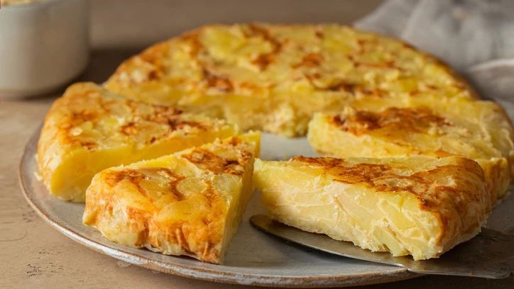

Tortilla
When most Americans think of a "tortilla", images of tacos and burritos dance in their heads. Those are Mexican tortillas. In Spain (and across much of South America) a tortilla is a different beast, more akin to an Italian frittata - essentially a round, chubby omelette. But unlike its Italian cousin, a tortilla española isn't baked. (Never!) Everything is cooked on the stovetop, the tortilla gently browned on both sides with an impressive flip in the middle of the process.
There are many versions, but the most basic - made with potato and onion - is the best. Yes the best. A good tortilla de patatas is magical. It has only 5 ingredients, yet it's perfect: rich and satisfying, somehow managing to be both elegant and homey. It can be breakfast, a snack, lunch, dinner, or after-the-bars-close food. It may take some practice to dial in your technique, but once you have it down you'll have it for life.

Ingredients
- 8 large Eggs
- Salt
- Extra Virgin Olive Oil
- 1 Onion
- 1 kg Potatoes
Steps
- In a large bowl, beat eggs vigorously with a large pinch of salt until frothy. Set aside.
- Meanwhile, in a 10-inch nonstick skillet, heat oil over medium-high heat until shimmering. Add potatoes and onions; they should gently (but not vigorously) bubble in the oil. Regulating heat to maintain a gentle bubbling, cook, stirring occasionally, until potatoes and onions are meltingly tender, about 25 minutes. Set a fine-mesh strainer over a heatproof bowl and drain potatoes and onions of excess oil. Reserve oil.
- Transfer potatoes and onions to a medium heatproof bowl and season generously with salt, stirring well to combine. Beat eggs vigorously to re-froth, then scrape potato and onion in and stir until thoroughly combined. Set aside for 5 minutes.
Meanwhile, wipe out skillet. Add 3 tablespoons (45ml) reserved frying oil to skillet and set over medium-high heat until shimmering. Scrape egg mixture into skillet and cook, swirling and shaking pan rapidly, until bottom and sides begin to set, about 3 minutes.
Using a heatproof spatula, press the edges in to begin to form the tortilla's puck shape. Continue to cook, adjusting heat to prevent bottom of tortilla from burning, until beginning to set around edges, about 3 minutes longer.
- Carefully place a large overturned flat plate or rimless pot lid on top of skillet, set your hand on top (using a dish towel if you are sensitive to heat), and, in one VERY quick motion, invert the tortilla onto it.
- Add 1 more tablespoon (15ml) reserved oil to skillet and return to heat. Carefully slide tortilla back into skillet and continue to cook until second side is beginning to firm up, about 2 minutes. Use spatula to again press the sides in all around to form a rounded puck shape.
- Continue to cook tortilla until lightly browned on second side but still tender in the center when pressed with a finger, about 2 minutes longer. If desired, you can flip tortilla 2 to 3 more times during these last minutes of cooking, which helps to cook the center more evenly and reinforce the shape.
- Carefully slide tortilla out of skillet onto a clean plate (or invert it onto a clean plate using same method as before) and let stand at least 5 minutes before serving (with alioli if desired).
- Tortilla can be cut into wedges for a larger meal or into cubes for an hors d'oeuvre–sized snack. It is just as good, if not better, at room temperature. Leftover tortilla can be refrigerated up to 3 days; allow to return to room temperature before serving. Remaining frying oil can be used in other dishes; it has an excellent flavor thanks to the long cooking with potato and onion.